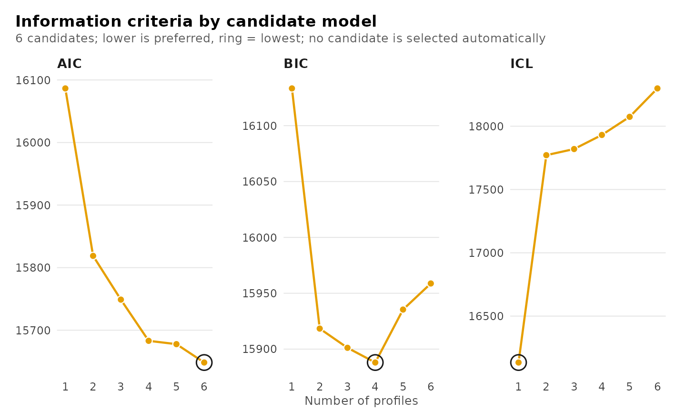
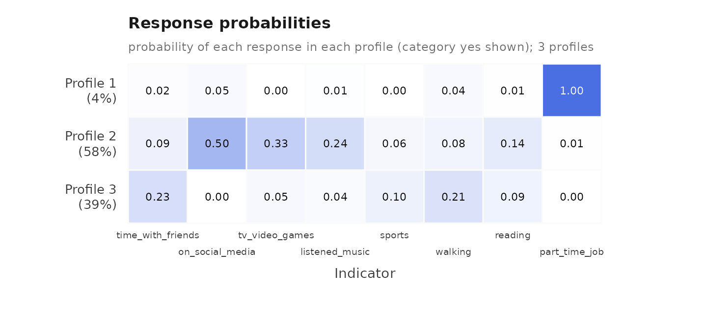
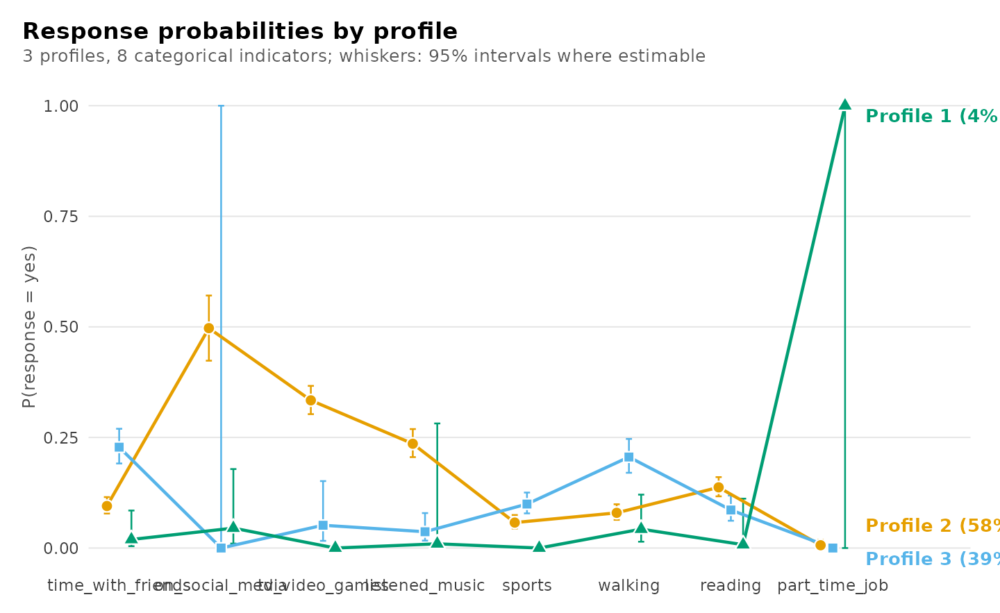
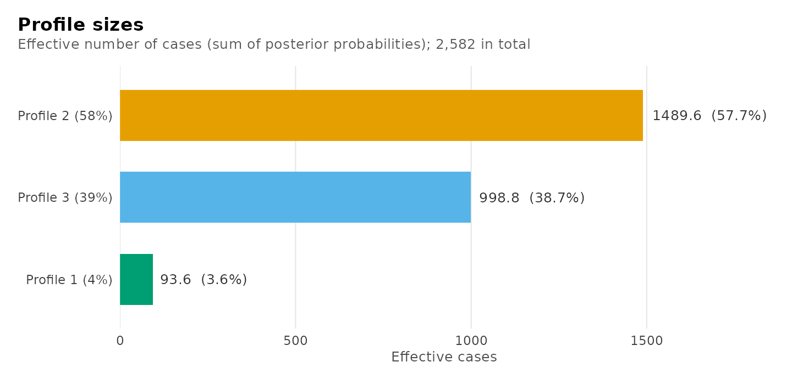
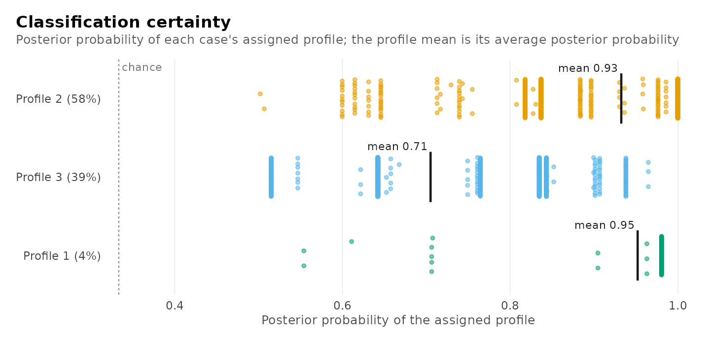
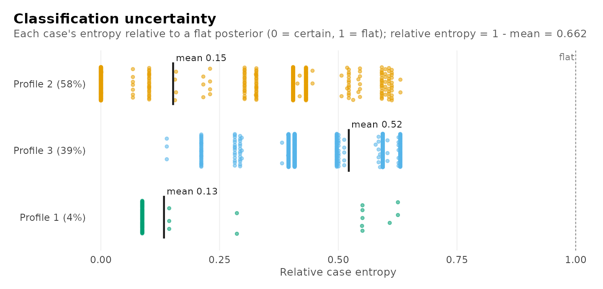
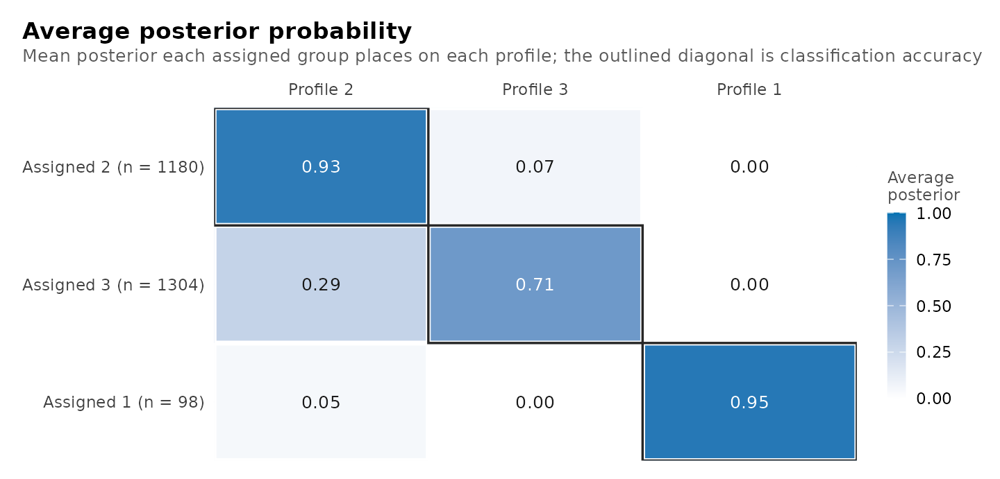

A complete latent class analysis workflow with the latents R package
Mohammed Saqr
University of Eastern FinlandSonsoles López-Pernas
University of Eastern FinlandSource:
vignettes/articles/workflow-lca.Rmd
workflow-lca.RmdLatent class analysis (LCA) is a person-centred method for identifying unobserved subgroups in data measured on categorical indicators (Collins & Lanza, 2010). It assumes that the observations come from a small number of unobserved classes, each characterized by its own probability of every response to every indicator. Within a class, the indicators are assumed to be independent of one another; this assumption of local independence means that the classes alone account for the associations among the indicators. The model estimates the response probabilities of each class, the proportion of the sample in each class, and the posterior probability with which each observation belongs to each class.
In learning analytics, LCA has been used to identify the engagement state of each student in each course from indicators of online activity. In the VaSSTra method, these states are subsequently arranged into sequences across the courses of a programme, and similar sequences are grouped into trajectories of engagement (López-Pernas & Saqr, 2023, 2024). Saqr and López-Pernas (2021) and Saqr et al. (2023) applied this approach to the engagement of students followed through a complete study programme, so that the latent classes of single course enrolments form the building blocks of students’ longitudinal trajectories.
As with latent profile analysis, an LCA involves a sequence of
decisions: the number of classes, the estimation from multiple starting
values, the interpretation of the classes, the evaluation of the
classification and of local independence, and the relation of the
classes to other variables (Nylund-Gibson & Choi, 2018; Weller et
al., 2020). This vignette presents a complete single-level analysis in
that order and extends the model to two levels in the final section. In
the output of this package the classes of observations are labelled
profile_1, profile_2, and so on.
The estimation uses random starting values; the seed is therefore set once so that the results can be reproduced.
Data
The student_esm data contain 2,582 experience-sampling
reports from 100 university students, collected in a study of academic
adjustment (Neubauer & Schmiedek, 2024). At each report made when
they had not studied since the previous prompt, a student indicated
whether they had been engaged in each of eight activities since the
previous report, and rated how happy, relaxed, worried and exhausted
they felt. The aim of the analysis is to identify typical combinations
of activities.
activities <- c("time_with_friends", "on_social_media", "tv_video_games",
"listened_music", "sports", "walking", "reading",
"part_time_job")
summary(subset(student_esm, select = activities))
#> time_with_friends on_social_media tv_video_games listened_music sports walking
#> no :2211 no :1837 no :2033 no :2193 no :2397 no :2254
#> yes: 371 yes: 745 yes: 549 yes: 389 yes: 185 yes: 328
#> reading part_time_job
#> no :2291 no :2479
#> yes: 291 yes: 103Every activity is absent at most reports. Social media is the most frequent (745 reports) and a part-time job the least frequent (103), so the classes are distinguished by how far their probabilities of each activity exceed these base rates.
The reports are nested in students. The first part of this vignette treats each report as an independent observation, which corresponds to the conventional single-level model; the nesting is taken into account in the final section.
Selecting the number of classes
The number of classes is not estimated by the model but specified by
the analyst, and is therefore chosen by fitting models with different
numbers of classes and comparing them (see the class
enumeration article). enumerate_lca() estimates models
with one to six classes and returns the results in one table.
models <- enumerate_lca(student_esm, activities, n_classes = 1:6)
#> 2 of 6 candidates reached their best log likelihood from one start only (classes4, classes5); refit those you consider with more starts.
plot_enumeration(models)
summary(models)
#> Class enumeration: 6 candidates, 6 converged, 0 failed to fit
#> 3 distinct candidate(s) are minimal under some criterion.
#> No candidate is selected automatically. Choose one convention and keep it.
#>
#> ! 2 of 6 candidates reached their best log likelihood from one start only
#> (classes4, classes5); refit those you consider with more starts.
#> ! 5 candidates have a class with average posterior below 0.8 (classes2,
#> classes3, classes4, classes5, classes6).
#>
#> -- lowest value of each criterion --------------------------------
#> criterion convention candidate value
#> aic <NA> classes6 15648
#> kic <NA> classes6 15704
#> bic groups classes4 15888
#> bic individuals classes4 15888
#> sabic groups classes4 15777
#> sabic individuals classes4 15777
#> caic groups classes4 15923
#> caic individuals classes4 15923
#> awe groups classes1 16220
#> awe individuals classes1 16220
#> icl groups classes1 16133
#> icl individuals classes1 16133
#> clc groups classes1 16070
#> clc individuals classes1 16070
#>
#> -- knees of bic_groups ----------------------------------------
#> direction line knee_candidate knee_without_largest stable
#> profiles 1 group class classes2 classes2 TRUE
#> parameters all candidates classes2 classes2 TRUE
#>
#> Tables: get_candidates(x), get_best(x), get_deltas(x), get_knees(x),
#> get_tree(x), get_classification(x), get_entropy(x), get_checks(x).
#> Plots: plot_criteria(x), plot_deltas(x), plot_avepp(x), plot_tree(x), plot_all(x).The BIC (Schwarz, 1978) is lowest for four classes, 13.2 points below the three-class model. The fourth class, however, contains 1.3% of the reports (about 32), which describe many activities at once, and the four-class model reaches its best log likelihood from only one of its starting values. A class of this size, supported by a solution that the starts do not replicate, is weakly supported, and the ICL (Biernacki et al., 2000), which additionally penalizes classification uncertainty, is lower for three classes than for four. The ICL is lowest for one class, which has no uncertainty to penalize, and among the models with more than one class it is lowest for two; the two-class solution, however, has a relative entropy below 0.5 and therefore separates the reports poorly. The three-class model is retained.
Estimation
lca() fits a single-level latent class model, estimated
by maximum likelihood with the expectation-maximization algorithm from
multiple starting values.
fit <- lca(student_esm, activities, n_classes = 3)
fit
#> Latent class analysis: 3 classes
#> 2582 observations; 8 categorical indicators
#> Classes are labelled profile_1, profile_2, ... in every table.
#> Log likelihood: -7848.453248 | AIC: 15748.906 | BIC: 15901.171
#> Converged: TRUE | iterations: 39 | best log likelihood reached by 2 of 10 starts (10 converged)
#>
#> Class sizes profile_1 3.6% (94) profile_2 57.7% (1490) profile_3 38.7% (999)
#>
#> Response probabilities
#> indicator category profile_1 profile_2 profile_3
#> time_with_friends no 0.981 0.905 0.772
#> time_with_friends yes 0.019 0.095 0.228
#> on_social_media no 0.955 0.503 1.000
#> on_social_media yes 0.045 0.497 0.000
#> tv_video_games no 1.000 0.666 0.948
#> tv_video_games yes 0.000 0.334 0.052
#> listened_music no 0.990 0.764 0.963
#> listened_music yes 0.010 0.236 0.037
#> sports no 1.000 0.942 0.901
#> sports yes 0.000 0.058 0.099
#> walking no 0.957 0.920 0.794
#> walking yes 0.043 0.080 0.206
#> reading no 0.992 0.863 0.914
#> reading yes 0.008 0.137 0.086
#> part_time_job no 0.000 0.994 1.000
#> part_time_job yes 1.000 0.006 0.000
#>
#> Thresholds and standard errors: get_results(x, "responses").
#> Every other table: get_results(x, what = ), or get_results(x, "all").Interpretation of the classes
The heatmap shows, for each class, the estimated probability that the activity was reported.
plot_profiles(fit, what = "heatmap")
The largest class, comprising 58% of the reports, is characterized by screen-based activities: social media, television and video games, and music. The smallest class, 4% of the reports, consists almost entirely of reports of working at a part-time job. The third class, 39% of the reports, has elevated probabilities of spending time with friends, walking and sport, and a probability of social media use close to zero. The same probabilities are shown below as profiles across the activities, with 95% confidence intervals where the probability is not on its boundary.
plot_responses(fit)
#> Warning: The fitted likelihood still carries a score worth 1.6% of a standard error;
#> refit with a tighter `tol` before using Wald inference.
The probabilities with their standard errors. Several are estimated at zero or one; a standard error is not defined on the boundary of the parameter space, so those are held at their bound and have none.
head(get_results(fit, "responses"), 8)
#> Warning: The fitted likelihood still carries a score worth 1.6% of a standard error;
#> refit with a tighter `tol` before using Wald inference.
#> profile indicator category probability threshold probability_standard_error
#> 1 1 time_with_friends no 0.9807 3.9263 0.01497
#> 2 2 time_with_friends no 0.9050 2.2543 0.00945
#> 3 3 time_with_friends no 0.7720 1.2198 0.02004
#> 4 1 time_with_friends yes 0.0193 NA 0.01497
#> 5 2 time_with_friends yes 0.0950 NA 0.00945
#> 6 3 time_with_friends yes 0.2280 NA 0.02004
#> 7 1 on_social_media no 0.9550 3.0547 0.03352
#> 8 2 on_social_media no 0.5027 0.0108 0.03788Classification quality
diagnostics() reports the classification measures and
draws the four classification plots: the effective size of each class,
the distribution of the posterior probability of each report’s assigned
class, each report’s contribution to the classification entropy, and the
average posterior probability matrix, which shows which classes are
confused with which.
diagnostics(fit)



#> Diagnostics: Latent class analysis, 3 classes
#> 2 checks need attention: estimates at a bound; pairs dependent within a class
#>
#> Estimation
#> ok best start converged yes
#> info best log likelihood reached by 2 of 10 starts
#> ok starts failed or unfinished 0 of 10
#> check estimates at a bound yes
#> a variance, probability, count mean or dispersion is at a numerical bound; ordinary Wald inference may be unavailable
#>
#> Class size
#> info smallest class individuals 3.6% (n = 94, class 1)
#> info modal vs estimated proportions individuals largest gap 0.120
#> ok classes with no assigned unit individuals 0 of 3
#>
#> Classification
#> info relative entropy individuals 0.662
#> info lowest average posterior individuals 0.705 (class 3)
#> info lowest odds of correct classification individuals 3.8 (class 3)
#>
#> Local independence
#> check pairs dependent within a class 4 of 84 tested pairs BH-adjusted p < 0.05
#> smallest adjusted p: listened_music x walking in profile_2, residual 0.110, adjusted p 0.0019
#>
#> Information
#> info log likelihood, parameters, BIC -7848.45, 26, 15901.17
#>
#> Every check with its reference: get_results(x, "checks"). Other tables: get_results(x, what = ).The relative entropy of 0.66 (Ramaswamy et al., 1993) indicates a moderately clear classification, although the reports of the third class are assigned with an average posterior of only 0.71. Relative entropy describes the quality of the classification for the chosen model rather than serving as a criterion for the number of classes (Sorgente et al., 2025).
Local dependence
The latent class model assumes that the activities are independent
within each class. The bivariate residual of a pair of activities
compares their observed co-occurrence within a class with the
co-occurrence the model implies, and a large value indicates a
dependence the classes do not explain. The p-value refers this Pearson
statistic to a chi-square distribution that ignores the estimation of
the model’s table, which makes it very conservative: in one simulation
from a correctly specified two-class model (n = 500, 200 replications)
it rejected 0.25% of pairs per class, and 0.08% pooled, at a nominal 5%.
p_adjusted is corrected across all the pairs by
Benjamini-Hochberg (Benjamini & Hochberg, 1995). A pair that passes
the filter below is therefore strong evidence of dependence, but a pair
that does not pass it is not evidence of independence.
subset(get_results(fit, "residuals"), p_adjusted < 0.01)
#> profile indicator_1 indicator_2 kind observed expected residual effective_n
#> 3 profile_2 listened_music walking categorical 0.11 4.24e-17 0.11 1490
#> statistic df p_value p_adjusted
#> 3 18 1 2.23e-05 0.00187The largest residual is that of listening to music and walking in
class 2 (18). local_dependence names pairs of categorical
indicators that are modelled jointly within each class: the pair then
has its own joint distribution in every class, and the other activities
remain independent given the class.
dependent <- lca(student_esm, activities, n_classes = 3,
local_dependence = "listened_music:walking")
get_results(dependent, "local_dependence")
#> pair kind profile item_1 category_1 item_2
#> 1 listened_music:walking categorical 1 listened_music no walking
#> 2 listened_music:walking categorical 1 listened_music no walking
#> 3 listened_music:walking categorical 1 listened_music yes walking
#> 4 listened_music:walking categorical 1 listened_music yes walking
#> 5 listened_music:walking categorical 2 listened_music no walking
#> 6 listened_music:walking categorical 2 listened_music no walking
#> 7 listened_music:walking categorical 2 listened_music yes walking
#> 8 listened_music:walking categorical 2 listened_music yes walking
#> 9 listened_music:walking categorical 3 listened_music no walking
#> 10 listened_music:walking categorical 3 listened_music no walking
#> 11 listened_music:walking categorical 3 listened_music yes walking
#> 12 listened_music:walking categorical 3 listened_music yes walking
#> category_2 probability independent ratio covariance correlation
#> 1 no 7.66e-01 0.761730 1.01e+00 NA NA
#> 2 yes 2.18e-01 0.222601 9.79e-01 NA NA
#> 3 no 7.49e-03 0.012125 6.18e-01 NA NA
#> 4 yes 8.18e-03 0.003543 2.31e+00 NA NA
#> 5 no 9.37e-01 0.937446 9.99e-01 NA NA
#> 6 yes 4.75e-02 0.046722 1.02e+00 NA NA
#> 7 no 1.58e-02 0.015080 1.05e+00 NA NA
#> 8 yes 1.00e-10 0.000752 1.33e-07 NA NA
#> 9 no 7.20e-01 0.703997 1.02e+00 NA NA
#> 10 yes 3.81e-02 0.053593 7.10e-01 NA NA
#> 11 no 2.10e-01 0.225262 9.31e-01 NA NA
#> 12 yes 3.27e-02 0.017148 1.91e+00 NA NAThe table gives each class’s joint probabilities of the pair beside
the products of its marginal probabilities, which are the probabilities
under independence, and their ratio. The two models describe the same
data and are compared with compare_models().
compare_models(independent = fit, dependent = dependent)
#> Model comparison
#>
#> Model Classes k LogLik BIC ΔBIC Weight ICL Entropy Min AvePP < 0.8
#> ----------- ------- -- -------- -------- ---- ------ -------- ------- --------- -----
#> independent 3 26 -7848.45 15901.17 0.00 0.561 17820.27 0.66 0.71 1
#> dependent 3 29 -7836.91 15901.66 0.49 0.439 17816.33 0.66 0.70 1The joint model raises the log likelihood by 11.5 at the cost of 3 parameters, and BIC is lower for the independent model. The dependence is present in the data, and the three classes describe the activities about as well without modelling it.
Classes and a distal outcome
three_step() estimates the mean of an outcome within
each class. It uses the BCH method, which applies the inverse estimated
classification-error matrix to modal class assignments (Bolck et al.,
2004). These corrected weights can be negative; posterior-probability
weighting is the separate method = "proportional" option.
The outcome here is the happiness rating.
happiness <- three_step(fit, student_esm, outcome = "happy")
happiness
#> Distal outcome by class (bch, 95% CI)
#>
#> Class Mean 95% CI SE Effective n
#> ----- ---- ------------ ----- -----------
#> 1 4.53 [4.22, 4.83] 0.156 88.80
#> 2 4.63 [4.53, 4.73] 0.051 957.30
#> 3 5.30 [5.16, 5.43] 0.068 549.14Happiness is highest in the class of reports away from screens (5.30 on the seven-point scale), and lower in the screen-based class (4.63) and the work class (4.53).
Extension to two levels
Each student contributes many reports, so the reports are not
independent. When the student identifier is supplied as id,
multilca() estimates a two-level model: the classes of
reports are estimated again, jointly with the student classes, and need
not coincide with the single-level classes; the students are in addition
grouped into latent classes that differ in the proportion of their
reports belonging to each class.
two_level <- multilca(student_esm, activities, id = "student",
n_profiles = 3, n_group_classes = 2)
get_results(two_level, "profile_probabilities")
#> group_class profile probability group_class_probability
#> 1 1 1 0.2264 0.36
#> 2 1 2 0.1052 0.36
#> 3 1 3 0.6685 0.36
#> 4 2 1 0.2513 0.64
#> 5 2 2 0.7271 0.64
#> 6 2 3 0.0216 0.64The two-level model is presented in detail in
vignette("lca").
References
Benjamini, Y., & Hochberg, Y. (1995). Controlling the false discovery rate: A practical and powerful approach to multiple testing. Journal of the Royal Statistical Society: Series B, 57(1), 289–300.
Biernacki, C., Celeux, G., & Govaert, G. (2000). Assessing a mixture model for clustering with the integrated completed likelihood. IEEE Transactions on Pattern Analysis and Machine Intelligence, 22, 719–725.
Bolck, A., Croon, M., & Hagenaars, J. (2004). Estimating latent structure models with categorical variables: One-step versus three-step estimators. Political Analysis, 12(1), 3–27.
Collins, L. M., & Lanza, S. T. (2010). Latent class and latent transition analysis. Wiley.
López-Pernas, S., & Saqr, M. (2023). From variables to states to trajectories (VaSSTra): A method for modelling the longitudinal dynamics of learning and behaviour. In Proceedings TEEM 2022: Tenth International Conference on Technological Ecosystems for Enhancing Multiculturality (pp. 1169–1178).
López-Pernas, S., & Saqr, M. (2024). Modeling the dynamics of longitudinal processes in education: A tutorial with R for the VaSSTra method. In M. Saqr & S. López-Pernas (Eds.), Learning analytics methods and tutorials: A practical guide using R (pp. 355–379). Springer. https://doi.org/10.1007/978-3-031-54464-4_11
Neubauer, A. B., & Schmiedek, F. (2024). Approaching academic adjustment on multiple time scales. Zeitschrift für Erziehungswissenschaft, 27(1), 147–168. https://doi.org/10.1007/s11618-023-01182-8
Nylund-Gibson, K., & Choi, A. Y. (2018). Ten frequently asked questions about latent class analysis. Translational Issues in Psychological Science, 4(4), 440–461. https://doi.org/10.1037/tps0000176
Ramaswamy, V., DeSarbo, W. S., Reibstein, D. J., & Robinson, W. T. (1993). An empirical pooling approach for estimating marketing mix elasticities with PIMS data. Marketing Science, 12, 103–124.
Saqr, M., & López-Pernas, S. (2021). The longitudinal trajectories of online engagement over a full program. Computers & Education, 175, 104325. https://doi.org/10.1016/j.compedu.2021.104325
Saqr, M., López-Pernas, S., Helske, S., & Hrastinski, S. (2023). The longitudinal association between engagement and achievement varies by time, students’ profiles, and achievement state: A full program study. Computers & Education, 199, 104787. https://doi.org/10.1016/j.compedu.2023.104787
Schwarz, G. (1978). Estimating the dimension of a model. The Annals of Statistics, 6, 461–464.
Sorgente, A., Caliciuri, R., Robba, M., Lanz, M., & Zumbo, B. D. (2025). A systematic review of latent class analysis in psychology: Examining the gap between guidelines and research practice. Behavior Research Methods, 57, 301. https://doi.org/10.3758/s13428-025-02812-1
Weller, B. E., Bowen, N. K., & Faubert, S. J. (2020). Latent class analysis: A guide to best practice. Journal of Black Psychology, 46(4), 287–311. https://doi.org/10.1177/0095798420930932